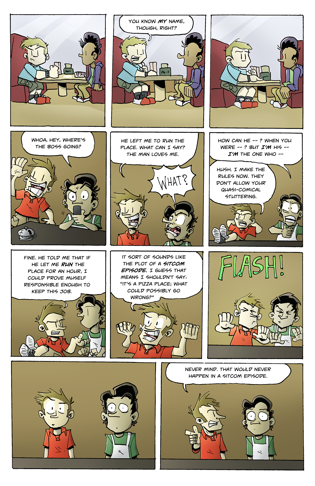
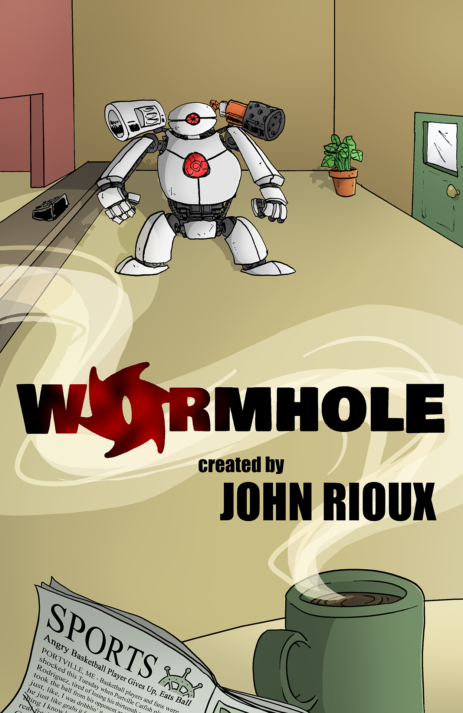
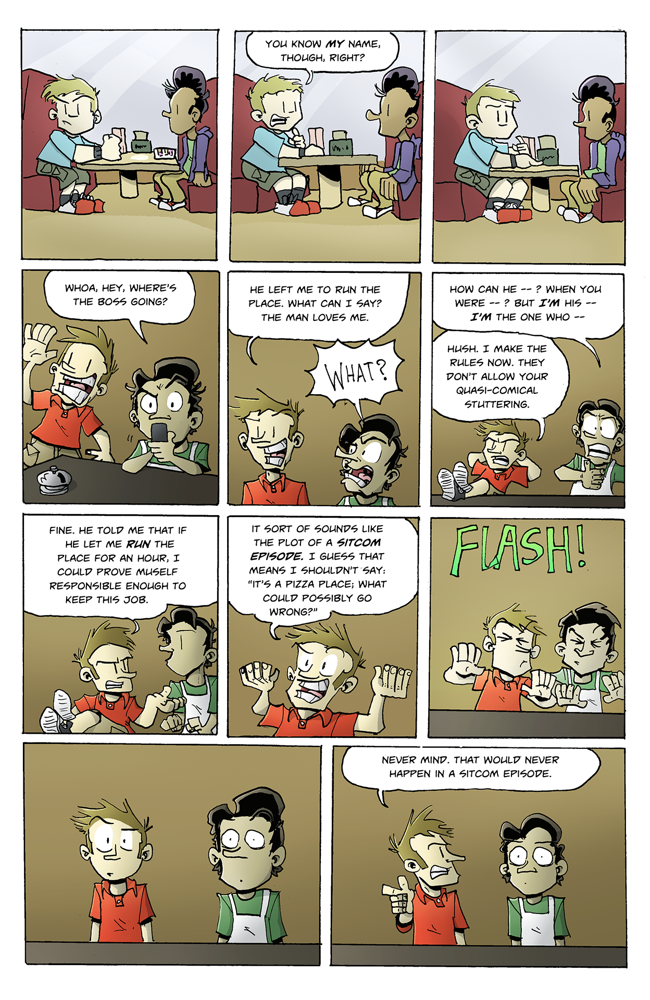
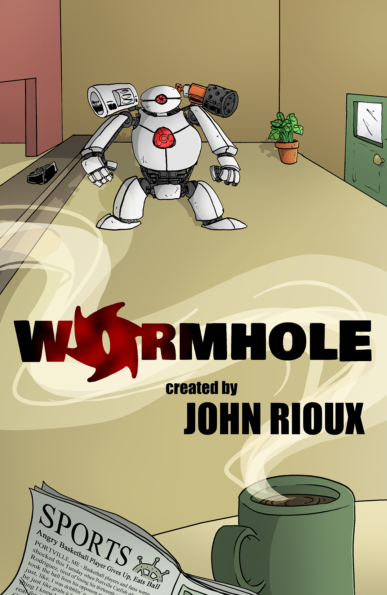
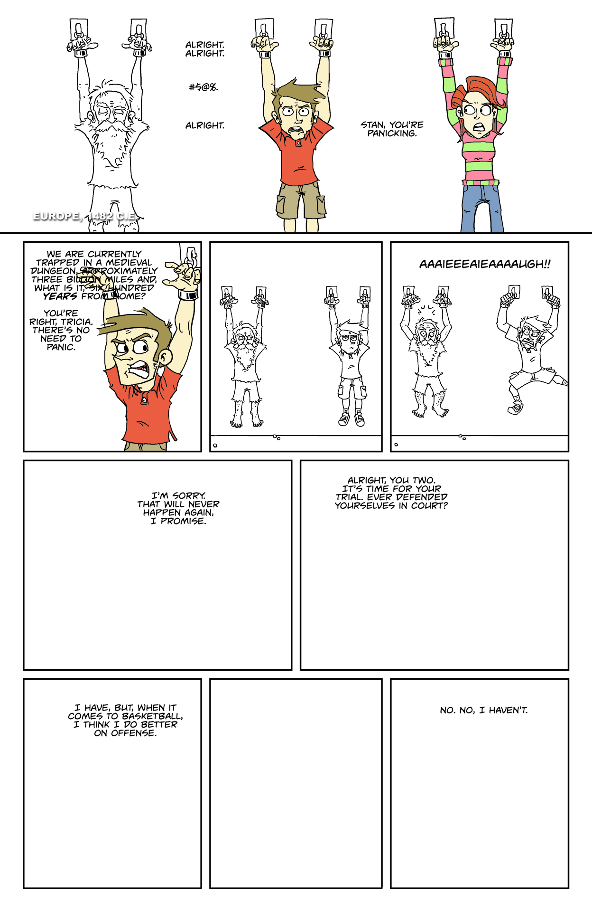
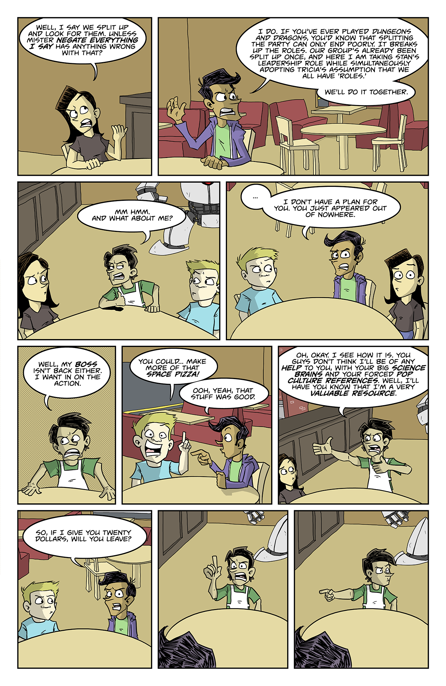

Wormhole
Wormhole was a genre-bending comedy series that I created in 2013, while I was in the eight grade. At this point in my life, I was actively pursuing a career in comic books and regularly publishing content to my old website. I wanted to create a science fiction series that used time travel to explore different genres. But I also wanted a cast of relatable (to me) teenage characters, so the end result is a sort of Doctor Who meets a sitcom like Community.
It took me fifteen months of writing and rewriting to complete the script for the first issue. This left me two weeks to do everything else, as I wanted to produce copies of the book to sell at the 2014 Maine Comics Arts Festival, so I rushed a bunch of drawings and put out a black and white copy. In 2015, I released a touched-up, full-color version, with an upgraded visual style (on the cover), and began work on the second issue. I finished the script, but I before I could finish the book, I got a little wrapped up in another project.
Here are some sample pages from the pilot. You can read the rest here.
 



Again, I didn't get very far into finishing this one. But you can read the full script here.
 